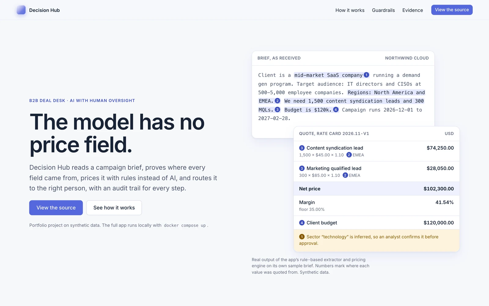
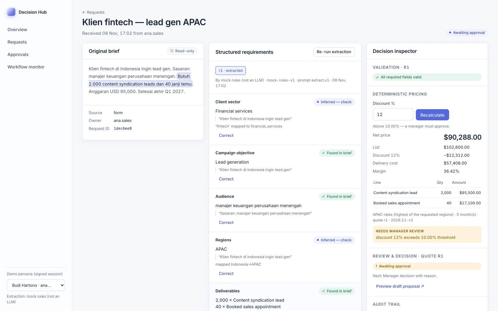
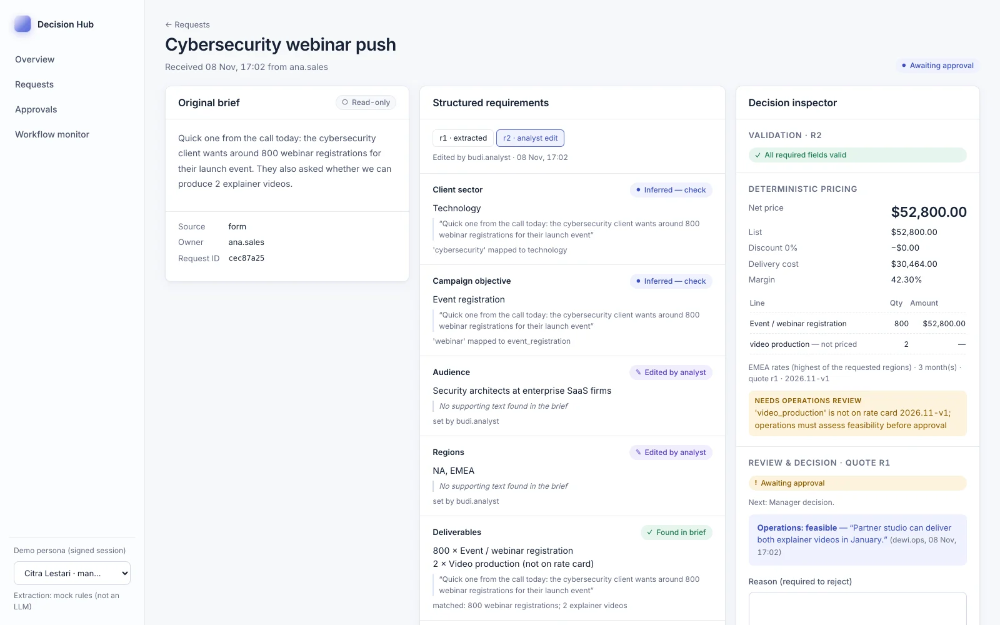
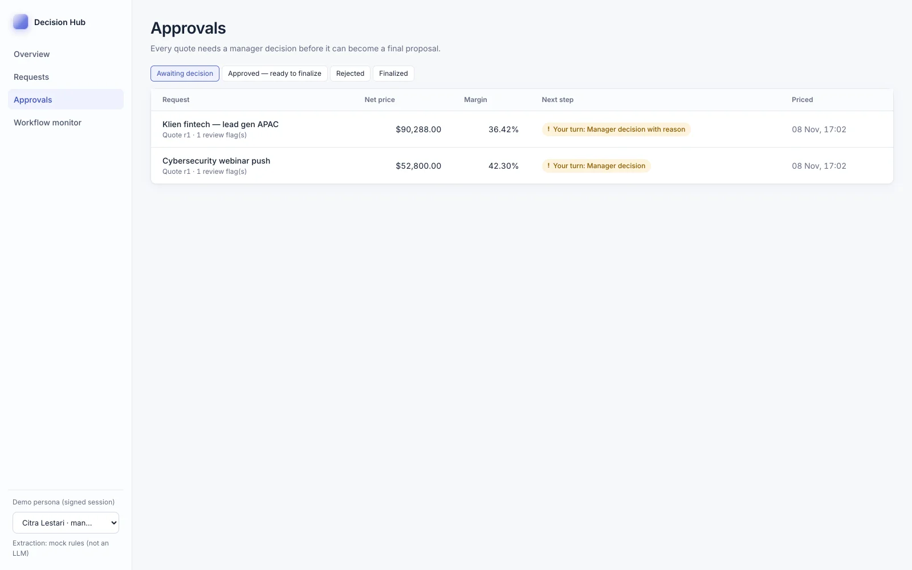
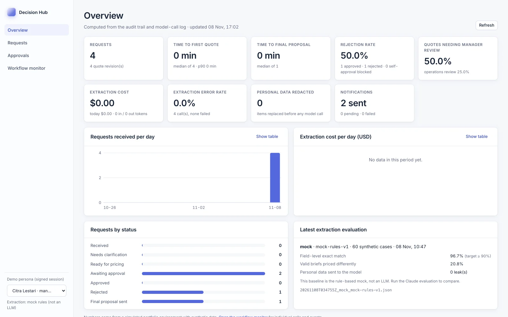
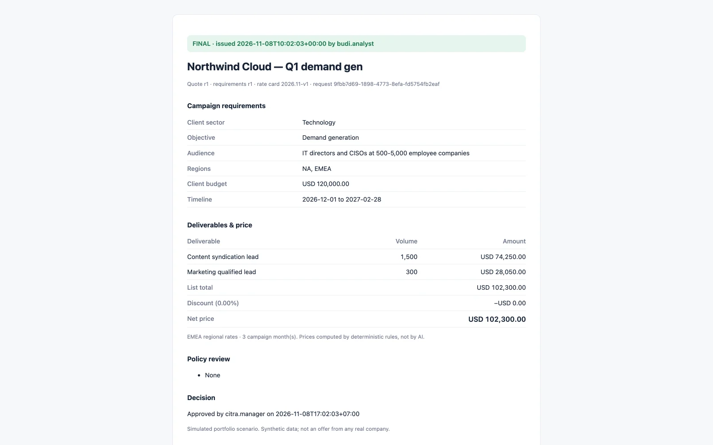
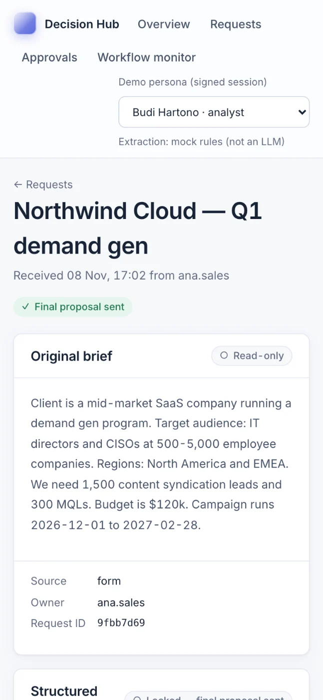

Decision Hub
From messy campaign briefs to decisions you can defend.
- Role
- Solo — requirements, UX, backend, AI integration, testing
- Stack
- FastAPI, PostgreSQL, React + TypeScript, Claude API (optional)
- Timeline
- November 2026
- Status
- Prototype · 101 backend tests + 5 browser journeys

A quote is only as good as the brief behind it.
In a B2B deal desk, sales sends campaign briefs as free text: an email, a chat message, notes from a call. Key details are often missing, the analyst re-types the rest into a spreadsheet, prices are worked out by hand, and approval happens in a separate chat with no record of what was approved.
The goal: one brief in, and out comes validated requirements, a quote that follows the pricing policy, a human decision on that exact quote, and a final proposal anyone can trace back to its source.
From the product specAI does not decide the price and may not change the rate card; every final decision passes through a person.
Five roles, one shared record.
| User | What they do in the app |
|---|---|
| Sales | Pastes the brief as received; sees only their own requests. |
| Deal-desk analyst | Checks the extracted fields, fixes gaps, prices the quote, issues the final proposal. |
| Operations | Confirms whether off-catalog work, like explainer videos, can be delivered. |
| Deal-desk manager | Approves or rejects one exact quote revision, with a reason when policy flags apply. |
| Auditor | Reads the full history of every brief and quote. |
AI where it helps, rules where it matters.
Each decision keeps the model useful without letting it make a business call.
- 01 / DECISION
The model proposes, code decides
The model may only fill seven requirement fields; its output schema has no price, discount or approval field. A deterministic engine prices the quote on a versioned rate card.
- 02 / DECISION
Every value must show its source
Each field quotes the sentence it came from. A quote that is not in the brief is downgraded to “verify”, and missing information stays missing instead of being guessed.
- 03 / DECISION
Approval belongs to one revision
A manager approves a specific quote revision. Editing a field or re-pricing voids it, and nobody can approve a request they created.
- 04 / DECISION
Personal data stays on the server
Emails, phone numbers, ID numbers and named contacts are replaced with placeholders before any model call, then restored locally for the analyst.
A full brief-to-proposal workflow.
Intake, AI-assisted extraction with source quotes, validation, analyst corrections as new revisions, deterministic pricing with policy flags, operations and manager review, an exactly-once final proposal, mock email and CRM notifications, a dashboard built from the audit trail, and an evaluation set for the extraction step.






What the tests and the evaluation show.
| Check | Result |
|---|---|
| Backend tests (pricing oracle, approvals, concurrency, redaction) | 101 passing |
| Browser journeys with WCAG 2.2 AA scans | 5 / 5, 3 runs |
| Labelled synthetic briefs in the evaluation set | 60 |
| Rule-based baseline: field-level exact match | 96.7% |
| Rule-based baseline: valid briefs that would be priced differently | 20.8% |
| Personal data reaching the extraction provider | 0 of 60 cases |
| Pricing time, p95 over 1,000 quotes | 0.014 ms |
| Lighthouse accessibility, desktop and mobile | 100 |
The baseline is the free rule-based extractor, not an LLM. Its high field score with a 20.8% pricing gap is why the evaluation reports business impact, not just accuracy. The Claude run is built but not yet measured.
Tested against its own rules.
Prices are checked against hand-calculated values; self-approval, stale approvals and six simultaneous finalize clicks are tested; notification retries are fault-injected; and the dashboard is reconciled against raw audit events. Deliberately breaking a rule makes the matching test fail.
- Not yet: a live Claude evaluation, a hosted interactive demo (the product page is public; the app runs locally with Docker), or real users. CI runs all tests, the browser journeys and the Docker build on every push.
- The generated half of the evaluation set shares phrasing patterns, so the 12 hand-written hard cases are what separate good extractors from weak ones. Name redaction only catches names after cues such as “Contact:”.